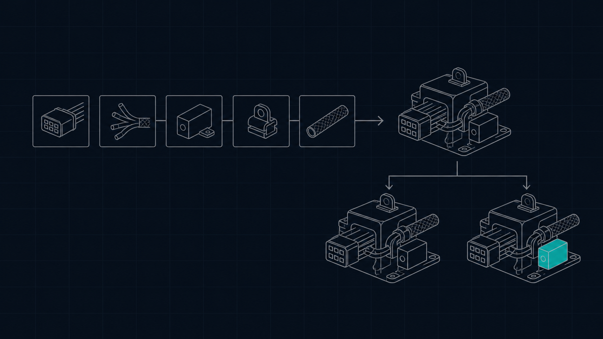
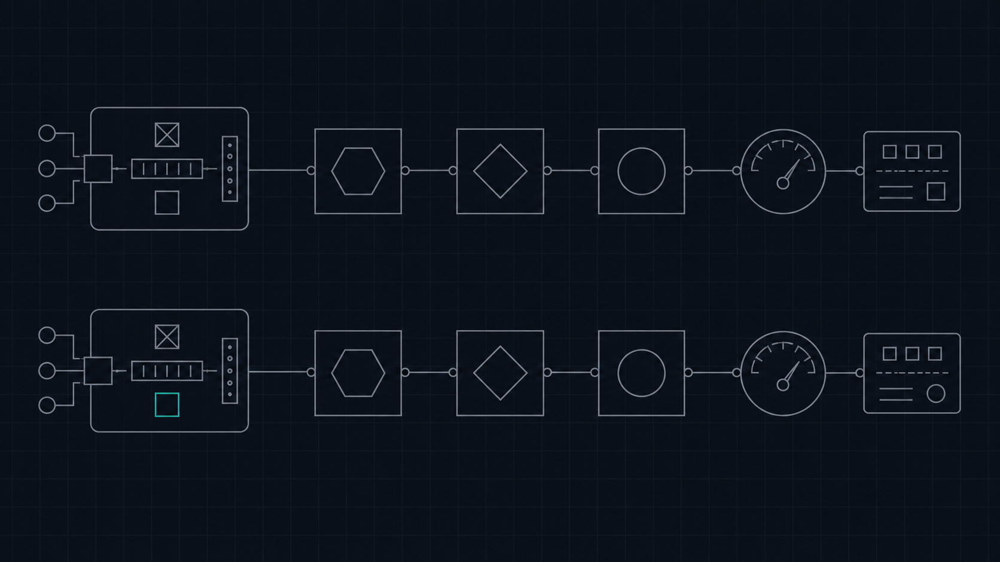

What problem are we asking it to solve?
Intro to
Harness Engineering
How to turn models into effective agents for specific outcomes.
Danial Hasan
AI consultant and product engineer
remedys.ai
We help teams build and use AI systems. We train engineers to work effectively with AI.
Consulting · education · training
One object.
Three views.
We’re going to view each concept from three different angles.
01
Visual
Build intuition.
02
Code
Expose the mechanism.
03
Trace
Inspect what happened.
Same system. Three representations.
We analyzed all
47 registrations.
Twenty-four people answered the optional coding-agent failure question.
24
answers about a difficult
coding-agent task
- 10Ongoing supervision, autonomy, or stopping
- 8Integration, dependencies, or toolchain complexity
- 7Incorrect or poor-fit output
- 6Missing context, requirements, or codebase grounding
- 5Architecture, design, or scalability quality
Mentions in 24 optional answers · multi-label themes can overlap · 5 answers did not state a specific failure
We’ll move down the
abstraction ladder.
At each zoom, we make the same system more concrete.
-
ZOOM 0
EXPERIMENT
Where are we in the experiment?
-
ZOOM 1
SURFACES
What aspect of the harness are we controlling?
-
ZOOM 2
POLICIES
How should that surface behave?
-
ZOOM 3
KNOBS + VALUES
What can we vary, and which alternative are we testing?
-
ZOOM 4
PROJECTION
Where should the policy become machinery?
-
ZOOM 5
CODE
What executable mechanism implements it?
-
ZOOM 6
TRACE
What behavior did that mechanism induce?
Same system. Different levels of abstraction.
EXPERIMENT→SURFACES→POLICIES→KNOBS→PROJECTION→CODE→TRACE
First, locate
the experiment.
A taskset defines the work. A harness solves it in a runtime. The trace records what happened so we can evaluate the harness.
PRIME INTELLECT · VERIFIERS V1
WHAT
TASKSET
→
HOW
HARNESS
→
WHERE
RUNTIME
→
RECORD
TRACE
How are we making the agent operate?
What world or computer is it operating inside?
What actually happened during the run?
Scoring reads the trace. The candidate harness does not define its own exam.
EXPERIMENT→SURFACES→POLICIES→KNOBS→PROJECTION→CODE→TRACE
Open the harness.
Five surfaces help us reason about how it operates.Tools, prompts, memory, permissions, hooks, and verifiers belong to different surfaces of the system around the model.
INSIDE THE HARNESS
TRUST BOUNDARY permissions · verification · evidence · stopping
What cognition do we invoke?
model · reasoning · routingWhat does the agent know now?
prompt · context · memoryWhat can the agent do?
tools · skills · MCP↓
How does the loop behave?
controller · hooks · state · delegation · lifecycleControl coordinates the system over time. Trust constrains and judges it.
EXPERIMENT→SURFACES→POLICIES→KNOBS→PROJECTION→CODE→TRACE
Pi makes the
five surfaces concrete.
One production harness coordinates every surface. The model is only one part of the system.
REAL HARNESS
PI CODING AGENT
Agent state and extension seams coordinate the model, context, tools, loop, and execution boundaries.
Agent state selects the model and how much thinking the provider should request.
AgentState
The system prompt, messages, and a context transform shape what the model sees next.
transformContext
The registry can contain more tools than the active set sent to the model.
setActiveToolsByName
Tool calls and queued messages determine whether the agent continues.
runLoop
Extensions can block a call before execution and inspect or rewrite its result.
wrapToolWithExtensions
The surfaces are teaching categories. Pi implements them through state, loop, session, and extension APIs.
EXPERIMENT→SURFACES→POLICIES→KNOBS→PROJECTION→CODE→TRACE
The surfaces are
visible in code.
Choose a surface. Each view condenses a pinned TypeScript source slice from Pi.
INTELLIGENCEAgent cognition
agent.tsprivate _state: AgentState = {
systemPrompt: "",
model: getModel("google", "gemini-2.5-flash-lite-preview-06-17"),
thinkingLevel: "off",
tools: [],
messages: [],
}Pi keeps the selected model and thinking level in agent state beside tools and messages.
Open pinned source ↗INFORMATIONContext before inference
agent-loop.tslet messages = context.messages;
if (config.transformContext) {
messages = await config.transformContext(messages, signal);
}
const llmContext = {
systemPrompt: context.systemPrompt,
messages: await config.convertToLlm(messages),
tools: context.tools,
};Pi can transform context before it builds the next model request.
Open pinned source ↗CAPABILITIESRegistered versus active
agent-session.tssetActiveToolsByName(toolNames: string[]): void {
const tools = toolNames
.map((name) => this._toolRegistry.get(name))
.filter(Boolean);
this.agent.setTools(tools);
this.agent.setSystemPrompt(this._rebuildSystemPrompt(toolNames));
}Pi can change callable tools and rebuild prompt context for the next turn.
Open pinned source ↗CONTROLContinue or stop
agent-loop.tswhile (true) {
while (hasMoreToolCalls || pendingMessages.length > 0) {
const message = await streamAssistantResponse(...);
const toolCalls = message.content.filter(isToolCall);
hasMoreToolCalls = toolCalls.length > 0;
}
}The controller continues while tools or queued messages require another model turn.
Open pinned source ↗TRUSTIntercept before execution
extensions/wrapper.tsconst callResult = await runner.emitToolCall({
type: "tool_call",
toolName: tool.name,
input: params,
});
if (callResult?.block) throw new Error(callResult.reason);Pi extensions can enforce a boundary before the underlying tool runs.
Open pinned source ↗Condensed for teaching. Open the pinned source for the full implementation.
EXPERIMENT→SURFACES→POLICIES→KNOBS→PROJECTION→CODE→TRACE
A harness is a
system of policies.
A policy is a rule for how the harness must operate. Policies keep the agent's behavior consistent across tools, context, permissions, and stopping.
CAPABILITIES
Only the active tools should appear in the next request.
Active tool selection + prompt rebuild
Open code ↗
INFORMATION
Each model call should receive the context selected for that turn.
Context transform before request assembly
Open code ↗
TRUST
Protected tool calls must pass extension checks before execution.
Pre-call blocking + post-result inspection
Open code ↗
RECOVERY
Retry only when the request-error hook approves recovery.
Hook-controlled retry decision
Open code ↗
EVIDENCE
Tool results should remain ordered and linked to their calls.
Parallel execution + ordered commit
Open code ↗
DELEGATION
Delegated work must stay within depth and execution bounds.
Depth cap + foreground or background mode
Open code ↗
AUTHORITY
Every protected action must resolve to allow, ask, or deny.
Ordered wildcard permission rules
Open code ↗
DELEGATION
Child work must respect recursive depth boundaries.
Depth check before child-session creation
Open code ↗
CHILD AUTHORITY
Delegated sessions should receive derived, constrained permissions.
Permission derivation + child-session lineage
Open code ↗
HARNESS = COORDINATED POLICY SYSTEM
Each source link shows one public projection, not the complete harness.
EXPERIMENT→SURFACES→POLICIES→KNOBS→PROJECTION→CODE→TRACE
Knobs expose choices
inside a policy.
A knob is a choice inside a policy. Knobs let us change one part of the harness without changing the goal of the policy.
POLICYExpose only capabilities relevant to the current work.Pi specimen
DISCLOSURE TIMINGeager · progressive · phase · search-driven (show tools that a search finds)
DISCLOSURE BREADTHall · broad · narrow · minimum
SELECTION MECHANISMstatic · retrieval · model · state
Pi keeps a registry, activates tools by name, and rebuilds prompt context for the selected set. An extension can change that set between turns.
Open tool-selection code ↗Open extension API ↗POLICYProtected actions must resolve through an explicit permission rule.OpenCode specimen
RULE ACTIONallow · ask · deny
MATCH SCOPEtool · path · wildcard pattern
RULE PRECEDENCEdefaults · agent · session approval
OpenCode combines ordered rulesets, wildcard patterns, and remembered approvals before it allows, asks, or denies.
Open authority code ↗POLICYRetry only recoverable failures within a bounded budget.Pi + DeepSeek specimens
RETRY TRIGGERprovider error · classifier · hook
RETRY BUDGETnone · fixed · adaptive
BACKOFFnone · fixed · exponential
Pi classifies provider failures for bounded backoff. DeepSeek delegates the retry decision to a hook.
Open Pi code ↗Open DeepSeek code ↗POLICYDelegated work must remain bounded and inspectable.DeepSeek + OpenCode specimens
DEPTH CAPdisabled · one level · bounded N
CHILD TOOLSinherit · filter · explicit set
EXECUTION MODEforeground · background · parallel
Both harnesses make delegation a policy surface with depth, permission, and execution choices.
Open DeepSeek code ↗Open OpenCode code ↗Knobs can be strategies, algorithms, limits, thresholds, or structures—not only settings.
EXPERIMENT→SURFACES→POLICIES→KNOBS→PROJECTION→CODE→TRACE
Projections make policies
executable.
A projection maps a policy to the parts of the harness that enforce it. We need projections because a policy has no effect until the system applies it.
RUNNING EXAMPLE · CAPABILITIESExpose only relevant capabilities.
KNOBDisclosure timing = progressive
PROMPT
TOOL SURFACE
CONTROLLER
PERMISSIONS
Several mechanisms can work together. We will follow the selected pair into code.
SECOND EXAMPLE · VERIFICATIONMaterial claims require evidence.
KNOBCompletion gate = evidence-complete
VERIFIER
STATE
STOP HOOK
TRACE
The same semantic rule can require mechanisms across several harness surfaces.
POLICIES ↔ KNOBS ↔ PROJECTIONSThe mapping is many-to-many. That is why the design space becomes combinatorial.
EXPERIMENT→SURFACES→POLICIES→KNOBS→PROJECTION→CODE→TRACE
Now it becomes
code.
Pi can start with a loader tool, then add matched tools before the next model request.
POLICYExpose only relevant capabilities.
KNOBTool disclosure strategy
VALUEProgressive
PROJECTIONController + active tool surface
PI EXTENSION API · DEFERRED-TOOL EXAMPLE
pi.on("session_start", () => {
pi.setActiveTools(["tool_search"]);
});
const active = pi.getActiveTools();
const added = matches.filter(
(name) => !active.includes(name)
);
pi.setActiveTools([
...new Set([...active, ...added])
]);The first call limits the initial surface. The second expands it after a match.
EXPERIMENT→SURFACES→POLICIES→KNOBS→PROJECTION→CODE→TRACE
Read actual public traces.
Task: Fix xarray.polyval so timedelta64 coordinates produce correct results.
MINI-SWE-AGENT · GPT-520 model calls
UNRESOLVED
- 01
grep -RIn "polyval"Find the implementation and nearby tests.
- 02
applypatchCommand not found. Switch to a Python edit.
- 03
run MVCEThe output is still near 1e30. Continue exploring.
- 04
manual Horner checkThe local computation produces expected values.
- 05
rerun MVCE → submitNo target pytest command appears before submission.
OPENHANDS · GPT-5About 30 recorded steps
RESOLVED
- 01
task_tracker.planCreate an eight-phase task plan.
- 02
pytest -qCollection fails for an unrelated dependency issue.
- 03
str_replace_editorEdit the numeric-conversion path.
- 04
run MVCEThe output now matches the expected values.
- 05
pytest test_computation.pyFocused tests pass. Commit and finish.
COMPARATIVE ANATOMY ≠ CAUSAL PROOF
The pair changes prompts, tools, state, and runtime details. Use it to read trajectories—not to rank harnesses.
A trace records
one trajectory.
Same xarray task. Same GPT-5 label. Two different recorded paths and outcomes.
One run shows what happened once. Repeated runs help estimate what tends to happen.
Failure mode 01.
Supervision + stopping.
10 mentions. The agent needs repeated correction or stops before the task is proven complete.
- OBSERVECompletion needs another human prompt.
The agent reports progress or completion, then a person must make it continue or gather more evidence.
- FIRST FAILURE TO CODEDeclared completion before required evidence.
- CLUSTER WITH
Stopped after a narrow check · needed a continue prompt · skipped completion evidence
- DIAGNOSEControl + trust
The loop and verifier do not agree on when enough evidence exists.
Apply this method to your traces.Open-code the first failure. Cluster the notes. Approve the taxonomy.
Open the trace clustering prompt ↗Aggregate registration evidence · trace signals are hypotheses to test, not claims about every response
Failure mode 02.
Integration + dependencies.
8 mentions. The local change looks correct while a connected system, dependency, or toolchain still breaks.
- OBSERVEThe edit succeeds inside a narrow boundary.
The agent misses a caller, existing behavior, dependency rule, or integration check outside that boundary.
- FIRST FAILURE TO CODEChanged a component before tracing its dependencies.
- CLUSTER WITH
Missed a caller · ignored existing behavior · tested only the local slice
- DIAGNOSEInformation + control
Context acquisition and dependency traversal stop too early.
Apply this method to your traces.Open-code the first failure. Cluster the notes. Approve the taxonomy.
Open the trace clustering prompt ↗Aggregate registration evidence · trace signals are hypotheses to test, not claims about every response
Failure mode 03.
Incorrect or poor-fit output.
7 mentions. The output looks plausible but does not satisfy the actual task or system contract.
- OBSERVEPlausibility substitutes for acceptance evidence.
The agent produces a reasonable result but checks the wrong target, ignores a failed gate, or never tests the real contract.
- FIRST FAILURE TO CODEAccepted output without verifying the target contract.
- CLUSTER WITH
Wrong API shape · unsuitable implementation · failed acceptance check ignored
- DIAGNOSETrust
The completion rule accepts a plausible artifact instead of verified task evidence.
Apply this method to your traces.Open-code the first failure. Cluster the notes. Approve the taxonomy.
Open the trace clustering prompt ↗Aggregate registration evidence · trace signals are hypotheses to test, not claims about every response
A harness is one point
in a design space.
Policies become knobs, values, projections, and code. Together, those choices define a harness.
01Policies
→
Desired behavior
02Knobs
→
What can vary
03Values
→
Chosen alternatives
04Projections
→
Where rules execute
05Code
→
The mechanism
06Harness
One design
progressive disclosure · existing completion rule · existing projection
the same harness, with one selected value changed
The engineering question: which harness choices help the agent satisfy the task contract?
A harness is one point
in a design space.
Policies become knobs, values, projections, and code. Together, those choices define a harness.

The engineering question: which harness choices help the agent satisfy the task contract?
Change the harness. Hold the
experiment fixed.
This is the Prime Intellect-style evaluation discipline we will use in the workshop.
HOLD FIXEDtask · model · runtime · authority · evaluator · budget
CHANGEone harness mechanism
BASELINEharness
→BASELINErun record
→SHAREDevaluator
→BASELINEresult
CHANGEDharness
→CHANGEDrun record
→SHAREDevaluator
→CHANGEDresult
One pairMechanism illustration
Repeated pairsEvidence about expected effect
Many tasksEvidence about generalization
Harness optimization automates parts of this outer experimental loop. It does not remove the need for a valid experiment.
Change the harness. Hold the
experiment fixed.
This is the Prime Intellect-style evaluation discipline we will use in the workshop.

Harness optimization automates parts of this outer experimental loop. It does not remove the need for a valid experiment.
Now you change
the harness.
You will run one bounded experiment on a real Pi harness and inspect the evidence yourself.
- 01Run
baseline
- 02Inspect
the trace
- 03Diagnose
one decision
- 04Predict
the effect
- 05Change
one harness rule
- 06Rerun
fresh episode
- 07Compare
trace + result
FIXEDtask · model · runtime · evaluator
ONE EDITrunner/policies/participant.md
The goal is not to prove your change is better. The goal is to make a prediction, run a valid comparison, and explain what the evidence supports.
You make the decisions.
The agents run the machinery.
I’ll keep time and help with recovery. I won’t choose your mechanism or conclusion.
Choose one rule to test. Decide what the evidence supports.
Run commands, preserve state, and summarize safe evidence.
Work in a fresh runtime and produce the recorded episode.
Codex does not replace Pi. You do not outsource the two decisions that make this harness engineering.
Open the
public workshop.
Use the synthetic repository. Do not open a private work repository for this exercise.
![QR code for the public Intro to Harness Engineering workshop repository]()
github.com/danialhasan/
intro-to-harness-engineering-workshop ↗
intro-to-harness-engineering-workshop ↗
- 01
Use your prepared clone. Git, Node 22.19+,
uv, and packages should already be ready. - 02
Open
workshop/in Codex. Codex will operate the experiment from there. - 03
Open
WORKSHOP_AGENT.md. Copy the start prompt on the next slide.
READYrun your own pair
PAIRjoin a ready machine
EXAMPLEreview the packaged evidence
Paste one prompt.
Then make two decisions.
Codex handles the mechanics. It must stop when your judgment is required.
Start the hands-on harness engineering workshop. Follow WORKSHOP_AGENT.md and AGENTS.md. Act as my operator, explain evidence in plain language, and stop for my decision at every HUMAN DECISION gate.
Choose one mechanism grounded in the observable trace.
Approve a limited claim and name what remains uncertain.
When the experiment card opens, keep it. That is your record of the task, policy change, traces, evaluator results, and evidence limit.